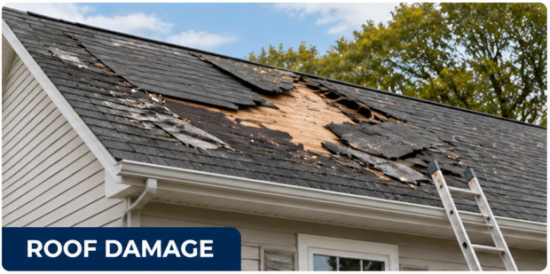
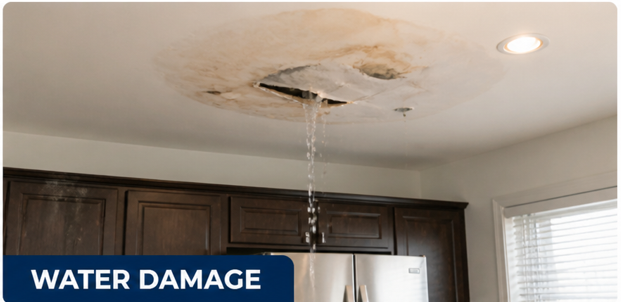
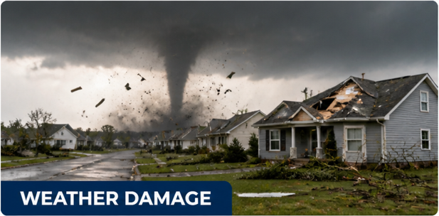
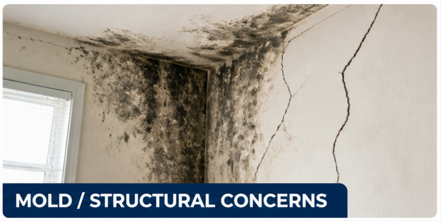

Fernando and Property Claim Group USA help inspect the property, identify visible damage, review policy details, document findings, and guide homeowners through the next steps.
After storms or leaks, small damage can turn into bigger problems fast.
Request Free InspectionTakes 10 seconds • No obligation
If you notice stains, leaks, missing shingles, moisture, window damage, or possible mold, it may be time to request an inspection.

Roof leaks, missing shingles, lifted materials, storm impact, or water entering from above.

Pipe leaks, appliance leaks, bathroom leaks, kitchen leaks, AC leaks, or ceiling stains.

Windstorm, hurricane, hail, wind, flood, or storm-related exterior damage.

Mold from moisture, visible wall damage, fire damage, roof concerns, or window damage.
Property Claim Group USA helps simplify the process so homeowners can better understand their options after property damage.
Schedule an inspection to better understand your situation and possible next steps.
Request Free InspectionFernando y Property Claim Group USA ayudan a inspeccionar la propiedad, identificar daños visibles, revisar detalles de la póliza, documentar hallazgos y guiar a los propietarios con los próximos pasos.
Después de tormentas o filtraciones, daños pequeños pueden convertirse en problemas más grandes rápidamente.
Solicitar Inspección GratisToma 10 segundos • Sin compromiso
Si ves manchas, filtraciones, tejas faltantes, humedad, daños en ventanas o posible moho, puede ser momento de solicitar una inspección.
Filtraciones, tejas faltantes, materiales levantados, impacto de tormenta o agua entrando desde arriba.
Fugas de tuberías, filtraciones de baño o cocina, AC, electrodomésticos o manchas en el techo.
Vientos fuertes, huracanes, granizo, inundaciones o daños exteriores por tormentas.
Moho por humedad, daños visibles en paredes, daños por fuego, techo o ventanas.
Property Claim Group USA ayuda a simplificar el proceso para que los propietarios entiendan mejor sus opciones después de un daño en la propiedad.
Solicita una inspección para entender mejor tu situación y posibles próximos pasos.
Solicitar Inspección GratisDisclaimer: This page is for informational and lead intake purposes only. Property Claim Group USA and its representatives provide property inspection, documentation, coordination, and guidance services. No outcome, payment amount, claim approval, settlement, or insurance decision is guaranteed. Any insurance claim decision depends on policy terms, documentation, damages, insurer review, and applicable laws. If legal advice or legal representation is needed, an appropriately licensed attorney should be consulted.